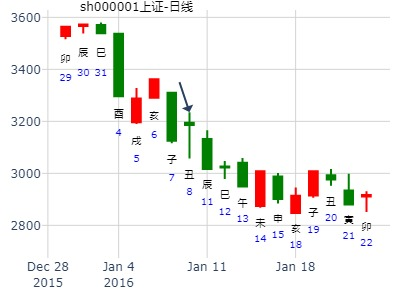
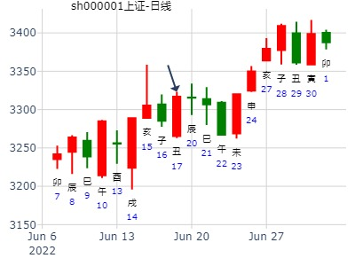
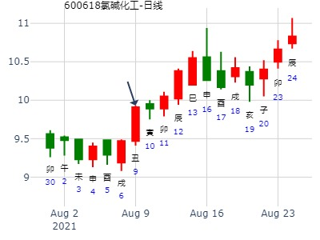
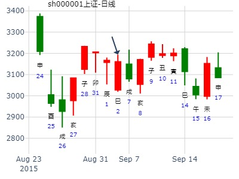

主帖标题: 六爻预测25日大盘行情
公历起卦时间：2011年1月25日9时30分 (手工指定)
干支：庚寅年 己丑月 庚辰日 辛巳时 （日空：申酉）
神煞：驿马－寅 桃花－酉 日禄－申 贵人－丑，未
坤宫：水天需 (游魂) 震宫：水风井
六神 伏神 本 卦 变 卦
腾蛇 妻财戊子水 ▅▅ ▅▅ 妻财戊子水 ▅▅ ▅▅
勾陈 兄弟戊戌土 ▅▅▅▅▅ 兄弟戊戌土 ▅▅▅▅▅ 世
朱雀 子孙戊申金 ▅▅ ▅▅ 世 子孙戊申金 ▅▅ ▅▅
青龙 兄弟甲辰土 ▅▅▅▅▅ 子孙辛酉金 ▅▅▅▅▅
玄武 父母乙巳火 官鬼甲寅木 ▅▅▅▅▅ 妻财辛亥水 ▅▅▅▅▅ 应
白虎 妻财甲子水 ▅▅▅▅▅ 应 ○→ 兄弟辛丑土 ▅▅ ▅▅
两个卦象有凶多吉少，上方有凶险大跌之象，下方虽然外表刚健，但变卦风气，追随下跌的机会大，妻财化兄弟克制，速抛为上策！下跌50点左右！个人观点！欢迎大家交流！
下周大盘1.11-1.15
本帖最后由 易情股恋 于 2016-1-8 15:04 编辑
乙未年己丑月己丑日壬申时 旬空：辰巳午未 (午未) 戌亥
坤宫：水天需（游魂） 震宫：水风井
六神 伏 神【本 卦】 【变 卦】
勾陈 ▄▄ ▄▄ 妻财戊子水 ▄▄ ▄▄ 妻财戊子水
朱雀 ▄▄▄▄▄ 兄弟戊戌土 ▄▄▄▄▄ 兄弟戊戌土 世
青龙 ▄▄ ▄▄ 子孙戊申金 世 ▄▄ ▄▄ 子孙戊申金
玄武 ▄▄▄▄▄ 兄弟甲辰土 ▄▄▄▄▄ 子孙辛酉金
白虎 父母乙巳火 ▄▄▄▄▄ 官鬼甲寅木 ▄▄▄▄▄ 妻财辛亥水 应
螣蛇 ▄▄▄▄▄ 妻财甲子水 应O ▄▄ ▄▄ 兄弟辛丑土 |
申日子孙值世，莫非冲了寅官暗动，或是冲飞露伏父母爻巳火透出，而跌。


占事：测徐工机械股价
公历起卦时间：2016年1月15日17时42分 (姓名-汉字-起卦-动爻加时辰)
干支：乙未年 己丑月 丙申日 丁酉时 （日空：辰巳）
汉字：能不能涨 笔画：总数 - 39 上卦数：14 下卦数：25
神煞：驿马－寅 桃花－酉 日禄－巳 贵人－酉，亥
坤宫：水天需 (游魂) 震宫：水风井
六神 伏神 本 卦 变 卦
青龙 妻财戊子水 ▅▅ ▅▅ 妻财戊子水 ▅▅ ▅▅
玄武 兄弟戊戌土 ▅▅▅▅▅ 兄弟戊戌土 ▅▅▅▅▅ 世
白虎 子孙戊申金 ▅▅ ▅▅ 世 子孙戊申金 ▅▅ ▅▅
腾蛇 兄弟甲辰土 ▅▅▅▅▅ 子孙辛酉金 ▅▅▅▅▅
勾陈 父母乙巳火 官鬼甲寅木 ▅▅▅▅▅ 妻财辛亥水 ▅▅▅▅▅ 应
朱雀 妻财甲子水 ▅▅▅▅▅ 应 ○→ 兄弟辛丑土 ▅▅ ▅▅
主帖标题: 六爻试测银行板块有涨停板？
六爻试测何时银行板块有涨停板？
公历起卦时间：2020年2月19日20时59分 (电脑自动)
干支：庚子年 戊寅月 壬辰日 庚戌时 （日空：午未）
坤宫：水天需 (游魂) 震宫：水风井
六神 伏神 本 卦 变 卦
白虎 妻财戊子水 ▅▅ ▅▅ 妻财戊子水 ▅▅ ▅▅
螣蛇 兄弟戊戌土 ▅▅▅▅▅ 兄弟戊戌土 ▅▅▅▅▅ 世
勾陈 子孙戊申金 ▅▅ ▅▅ 世 子孙戊申金 ▅▅ ▅▅
朱雀 兄弟甲辰土 ▅▅▅▅▅ 子孙辛酉金 ▅▅▅▅▅
青龙 父母乙巳火 官鬼甲寅木 ▅▅▅▅▅ 妻财辛亥水 ▅▅▅▅▅ 应
玄武 妻财甲子水 ▅▅▅▅▅ 应 ○→ 兄弟辛丑土 ▅▅ ▅▅
主帖标题: 2022年第8周2月21至2月25日个股300491和600031预测汇总
2022年第8周2月21至2月25日个股600031预测
公历时间：2022年2月19日10时37分 农历时间：壬寅年 正月十九日巳时
干 支：壬寅年 壬寅月 癸卯日 丁巳时
旬 空：辰巳 辰巳 辰巳 子丑
神 煞：驿马─巳 桃花─子 日禄─子 贵人─巳，卯
坤宫：水天需（游魂） 震宫：水风井
六神 伏 神 【本 卦】 【变 卦】
白虎 ▄▄ ▄▄ 妻财戊子水 ▄▄ ▄▄ 妻财戊子水
螣蛇 ▄▄▄▄▄ 兄弟戊戌土 ▄▄▄▄▄ 兄弟戊戌土 世
勾陈 ▄▄ ▄▄ 子孙戊申金 世 ▄▄ ▄▄ 子孙戊申金
朱雀 ▄▄▄▄▄ 兄弟甲辰土 ▄▄▄▄▄ 子孙辛酉金
青龙 父母乙巳火 ▄▄▄▄▄ 官鬼甲寅木 ▄▄▄▄▄ 妻财辛亥水 应
玄武 ▄▄▄▄▄ 妻财甲子水 应○ ▄▄ ▄▄ 兄弟辛丑土
周跌，一二三跌，四五涨，，，，，跌，跌，跌，涨，涨，，，，，周跌
主帖标题: [原创]上海大盘指数3月14日情况预测
公历时间：2007年3月13日19时52分 星期二
农历时间：丁亥年正月廿四戌时
干支：丁亥年 癸卯月 丙午日 戊戌时 (旬空：寅卯)
神煞：驿马—申 桃花—卯 日禄—巳 贵人—酉，亥
坤宫：水天需（游魂） 震宫：水风井
六神 伏 神 【本 卦】 【变 卦】
青龙 ▅▅ ▅▅ 妻财戊子水 ▅▅ ▅▅ 妻财戊子水
玄武 ▅▅▅▅▅ 兄弟戊戌土 ▅▅▅▅▅ 兄弟戊戌土 世
白虎 ▅▅ ▅▅ 子孙戊申金 世 ▅▅ ▅▅ 子孙戊申金
螣蛇 ▅▅▅▅▅ 兄弟甲辰土 ▅▅▅▅▅ 子孙辛酉金
勾陈 父母乙巳火 ▅▅▅▅▅ 官鬼甲寅木 ▅▅▅▅▅ 妻财辛亥水 应
朱雀 ▅▅▅▅▅ 妻财甲子水 应○→ ▅▅ ▅▅ 兄弟辛丑土

出生：没填 年 性别：男 占事：300329海伦钢琴下午跟明天涨跌
排卦：元亨利贞网六爻在线排盘系统 http://www.china95.net
公历起卦时间：2016年3月2日12时58分 (电脑自动)
干支：丙申年 庚寅月 癸未日 戊午时 （日空：申酉）
坤宫：水天需 (游魂) 震宫：水风井
六神 伏神 本 卦 变 卦
白虎 妻财戊子水 ▅▅ ▅▅ 妻财戊子水 ▅▅ ▅▅
腾蛇 兄弟戊戌土 ▅▅▅▅▅ 兄弟戊戌土 ▅▅▅▅▅ 世
勾陈 子孙戊申金 ▅▅ ▅▅ 世 子孙戊申金 ▅▅ ▅▅
朱雀 兄弟甲辰土 ▅▅▅▅▅ 子孙辛酉金 ▅▅▅▅▅
青龙 父母乙巳火 官鬼甲寅木 ▅▅▅▅▅ 妻财辛亥水 ▅▅▅▅▅ 应
玄武 妻财甲子水 ▅▅▅▅▅ 应 ○→ 兄弟辛丑土 ▅▅ ▅▅
占事：000063中兴通讯5月下半月
公历起卦时间：2015年5月17日20时58分 (阿晖在线摇卦)
干支：乙未年 辛巳月 癸巳日 壬戌时 （日空：午未）
坤宫：水天需 (游魂) 震宫：水风井
六神 伏神 本 卦 变 卦
白虎 妻财戊子水 ▅▅ ▅▅ 妻财戊子水 ▅▅ ▅▅
腾蛇 兄弟戊戌土 ▅▅▅▅▅ 兄弟戊戌土 ▅▅▅▅▅ 世
勾陈 子孙戊申金 ▅▅ ▅▅ 世 子孙戊申金 ▅▅ ▅▅
朱雀 兄弟甲辰土 ▅▅▅▅▅ 子孙辛酉金 ▅▅▅▅▅
青龙 父母乙巳火 官鬼甲寅木 ▅▅▅▅▅ 妻财辛亥水 ▅▅▅▅▅ 应
玄武 妻财甲子水 ▅▅▅▅▅ 应 ○→ 兄弟辛丑土 ▅▅ ▅▅
主帖标题: Q6.17上证收盘走势？空ly 反呤
6.17上证收盘走势？
公历起卦时间：2022年6月17日7时41分 (电脑自动)
干支：壬寅年 丙午月 辛丑日 壬辰时 （日空：辰巳）
神煞：驿马－亥 桃花－午 日禄－酉 贵人－寅，午
坤宫：水天需 (游魂) 震宫：水风井
六神 伏神 本 卦 变 卦
螣蛇 妻财戊子水 ▅▅ ▅▅ 妻财戊子水 ▅▅ ▅▅
勾陈 兄弟戊戌土 ▅▅▅▅▅ 兄弟戊戌土 ▅▅▅▅▅ 世
朱雀 子孙戊申金 ▅▅ ▅▅ 世 子孙戊申金 ▅▅ ▅▅
青龙 兄弟甲辰土 ▅▅▅▅▅ 子孙辛酉金 ▅▅▅▅▅
玄武 父母乙巳火 官鬼甲寅木 ▅▅▅▅▅ 妻财辛亥水 ▅▅▅▅▅ 应
白虎 妻财甲子水 ▅▅▅▅▅ 应 ○→ 兄弟辛丑土 ▅▅ ▅▅

主帖标题: [原创]每日预测深沪两市大盘方向
公历时间：2008年7月11日9时30分 星期五
农历时间：戊子年六月初九巳时
干支：戊子年 己未月 壬子日 乙巳时 (旬空：寅卯)
神煞：驿马—寅 桃花—酉 日禄—亥 贵人—卯，巳
坤宫：水天需（游魂） 震宫：水风井六神
伏 神 【本 卦】 【变 卦】
白虎 ▅▅ ▅▅ 妻财戊子水 ▅▅ ▅▅ 妻财戊子水
螣蛇 ▅▅▅▅▅ 兄弟戊戌土 ▅▅▅▅▅ 兄弟戊戌土 世
勾陈 ▅▅ ▅▅ 子孙戊申金 世 ▅▅ ▅▅ 子孙戊申金
朱雀 ▅▅▅▅▅ 兄弟甲辰土 ▅▅▅▅▅ 子孙辛酉金
青龙 父母乙巳火 ▅▅▅▅▅ 官鬼甲寅木 ▅▅▅▅▅ 妻财辛亥水 应
玄武 ▅▅▅▅▅ 妻财甲子水 应○→ ▅▅ ▅▅ 兄弟辛丑土
主帖标题: 六爻预测8日大盘行情
公历起卦时间：2011年7月8日9时30分 (手工指定)
干支：辛卯年 乙未月 甲子日 己巳时 （日空：戌亥）
坤宫：水天需 (游魂) 震宫：水风井
六神 伏神 本 卦 变 卦
玄武 妻财戊子水 ▅▅ ▅▅ 妻财戊子水 ▅▅ ▅▅
白虎 兄弟戊戌土 ▅▅▅▅▅ 兄弟戊戌土 ▅▅▅▅▅ 世
腾蛇 子孙戊申金 ▅▅ ▅▅ 世 子孙戊申金 ▅▅ ▅▅
勾陈 兄弟甲辰土 ▅▅▅▅▅ 子孙辛酉金 ▅▅▅▅▅
朱雀 父母乙巳火 官鬼甲寅木 ▅▅▅▅▅ 妻财辛亥水 ▅▅▅▅▅ 应
青龙 妻财甲子水 ▅▅▅▅▅ 应 ○→ 兄弟辛丑土 ▅▅ ▅▅
两个卦象不太乐观，子孙被月扶，但是未月还有燥土克制子孙的本气，妻子临日动化合兄弟，化土，可能下跌！建议观静为主！个人观点！
主帖标题: 上证未月（目前3332点）走势
姓名：姓名 男 占事:占事 起卦方式：手动摇卦
公历时间：2020年7月7日19时32分
干 支：庚子年 癸未月 辛亥日 戊戌时
旬 空：辰巳 申酉 寅卯 辰巳
坤宫：水天需（游魂） 震宫：水风井
六神 伏 神 【本 卦】 【变 卦】
螣蛇 ▄▄ ▄▄ 妻财戊子水 ▄▄ ▄▄ 妻财戊子水
勾陈 ▄▄▄▄▄ 兄弟戊戌土 ▄▄▄▄▄ 兄弟戊戌土 世
朱雀 ▄▄ ▄▄ 子孙戊申金 世 ▄▄ ▄▄ 子孙戊申金
青龙 ▄▄▄▄▄ 兄弟甲辰土 ▄▄▄▄▄ 子孙辛酉金
玄武 父母乙巳火 ▄▄▄▄▄ 官鬼甲寅木 ▄▄▄▄▄ 妻财辛亥水 应
白虎 ▄▄▄▄▄ 妻财甲子水 应O-> ▄▄ ▄▄ 兄弟辛丑土
占事：8月21日下午大盘如何？ 王电脑
公历时间：2014年8月21日11时22分
干 支：甲午年 壬申月 甲子日 庚午时
旬 空：辰巳 戌亥 (戌亥) 戌亥
坤宫：水天需（游魂） 震宫：水风井
六神 伏 神 【本 卦】 【变 卦】
玄武 ▄▄ ▄▄ 妻财戊子水 ▄▄ ▄▄ 妻财戊子水
白虎 ▄▄▄▄▄ 兄弟戊戌土 ▄▄▄▄▄ 兄弟戊戌土 世
螣蛇 ▄▄ ▄▄ 子孙戊申金 世 ▄▄ ▄▄ 子孙戊申金
勾陈 ▄▄▄▄▄ 兄弟甲辰土 ▄▄▄▄▄ 子孙辛酉金
朱雀 父母乙巳火 ▄▄▄▄▄ 官鬼甲寅木 ▄▄▄▄▄ 妻财辛亥水 应
青龙 ▄▄▄▄▄ 妻财甲子水 应O-> ▄▄ ▄▄ 兄弟辛丑土
主帖标题: 谁出个主意吧氯碱化工
600618到周五收盘涨跌 以9.91为准论涨跌
公历时间：2021年8月9日21时30分
干 支：辛丑年 丙申月 己丑日 乙亥时
旬 空：辰巳 辰巳 午未 申酉
神 煞：驿马─亥 桃花─午 日禄─午 贵人─子，申
坤宫：水天需（游魂） 震宫：水风井
勾陈 ▄▄ ▄▄ 妻财戊子水 ▄▄ ▄▄ 妻财戊子水
朱雀 ▄▄▄▄▄ 兄弟戊戌土 ▄▄▄▄▄ 兄弟戊戌土 世
青龙 ▄▄ ▄▄ 子孙戊申金 世 ▄▄ ▄▄ 子孙戊申金
玄武 ▄▄▄▄▄ 兄弟甲辰土 ▄▄▄▄▄ 子孙辛酉金
白虎 父母乙巳火 ▄▄▄▄▄ 官鬼甲寅木 ▄▄▄▄▄ 妻财辛亥水 应
螣蛇 ▄▄▄▄▄ 妻财甲子水 应○ ▄▄ ▄▄ 兄弟辛丑土

占问事宜：要问的事情600006明天
公历：2021年8月12日14时38分，星期四。
神煞：驿马-寅 桃花-酉 干禄-亥 贵人-卯、巳
干支：辛丑年 丙申月 壬辰日 丁未时 (卦身：卯)
主变卦 水天需(坤宫-游魂) 之 水风井(震宫) [空亡:午、未]
白虎 ▅▅ ▅▅ 妻财戊子水 ▅▅ ▅▅ 妻财戊子水
螣蛇 ▅▅▅▅▅ 兄弟戊戌土 ▅▅▅▅▅ 兄弟戊戌土 世
勾陈 ▅▅ ▅▅ 子孙戊申金 世 ▅▅ ▅▅ 子孙戊申金
朱雀 ▅▅▅▅▅ 兄弟甲辰土 ▅▅▅▅▅ 子孙辛酉金
青龙 父母乙巳火 ▅▅▅▅▅ 官鬼甲寅木 ▅▅▅▅▅ 妻财辛亥水 应
玄武 ▅▅▅▅▅○妻财甲子水 应 ▅▅ ▅▅ 兄弟辛丑土
结果跌3% 解释..

起卦方式：手工指定 www.iqing.net 线上排盘系统公历时间：2007年9月20日9时30分 星期四农历时间：丁亥年八月初十巳时干支：丁亥年 己酉月 丁巳日 乙巳时 (旬空：子丑)神煞：驿马—亥 桃花—午 日禄—午 贵人—酉，亥 坤宫：水天需（游魂） 震宫：水风井六神 伏 神 【本 卦】 【变 卦】青龙 ▅▅ ▅▅ 妻财戊子水 ▅▅ ▅▅ 妻财戊子水 玄武 ▅▅▅▅▅ 兄弟戊戌土 ▅▅▅▅▅ 兄弟戊戌土 世白虎 ▅▅ ▅▅ 子孙戊申金 世 ▅▅ ▅▅ 子孙戊申金 螣蛇 ▅▅▅▅▅ 兄弟甲辰土 ▅▅▅▅▅ 子孙辛酉金 勾陈 父母乙巳火 ▅▅▅▅▅ 官鬼甲寅木 ▅▅▅▅▅ 妻财辛亥水 应朱雀 ▅▅▅▅▅ 妻财甲子水 应○→ ▅▅ ▅▅ 兄弟辛丑土 断：上海大盘指数；上午先小涨，横盘，下午下跌收盘为主！
主帖标题: [原创]每日预测深沪两市大盘指数
公历时间：2007年9月26日9时30分 星期三
农历时间：丁亥年八月十六巳时
干支：丁亥年 己酉月 癸亥日 丁巳时 (旬空：子丑)
神煞：驿马—巳 桃花—子 日禄—子 贵人—卯，巳
坤宫：水天需（游魂） 震宫：水风井
六神 伏 神 【本 卦】 【变 卦】
白虎 ▅▅ ▅▅ 妻财戊子水 ▅▅ ▅▅ 妻财戊子水
螣蛇 ▅▅▅▅▅ 兄弟戊戌土 ▅▅▅▅▅ 兄弟戊戌土 世
勾陈 ▅▅ ▅▅ 子孙戊申金 世 ▅▅ ▅▅ 子孙戊申金
朱雀 ▅▅▅▅▅ 兄弟甲辰土 ▅▅▅▅▅ 子孙辛酉金
青龙 父母乙巳火 ▅▅▅▅▅ 官鬼甲寅木 ▅▅▅▅▅ 妻财辛亥水 应
玄武 ▅▅▅▅▅ 妻财甲子水 应○→ ▅▅ ▅▅ 兄弟辛丑土
主帖标题: 9月2日 上证大盘走势
哦 没错 低开 涨1.16% 收中阳线
但自己操盘失误 中石化的卦有点诡异.以为自己的卦有误 未逢高甩再低吸 白守一天 也知道此卦世为何化退 咦 信卦与不信卦 唉
附中石化的卦
男 占事: 600028 上午走势
起卦方式：手动摇卦 周易天地www.64gua.com六爻线上排盘系统
公历时间：2009年9月2日9时28分
干支：己丑年 壬申月 庚戌日 辛巳时 旬空：午未 戌亥 寅卯 申酉
坤宫：水天需（游魂） 震宫：水风井
六神 伏 神 【本 卦】 【变 卦】
螣蛇 ▄▄ ▄▄ 妻财戊子水 ▄▄ ▄▄ 妻财戊子水
勾陈 ▄▄▄▄▄ 兄弟戊戌土 ▄▄▄▄▄ 兄弟戊戌土 世
朱雀 ▄▄ ▄▄ 子孙戊申金 世 ▄▄ ▄▄ 子孙戊申金
青龙 ▄▄▄▄▄ 兄弟甲辰土 ▄▄▄▄▄ 子孙辛酉金
玄武 父母乙巳火 ▄▄▄▄▄ 官鬼甲寅木 ▄▄▄▄▄ 妻财辛亥水 应
白虎 ▄▄▄▄▄ 妻财甲子水 应O-> ▄▄ ▄▄ 兄弟辛丑土
男 占事: 600028 下午走势
起卦方式：手动摇卦 周易天地www.64gua.com六爻线上排盘系统
公历时间：2009年9月2日9时29分
干支：己丑年 壬申月 庚戌日 辛巳时
旬空：午未 戌亥 寅卯 申酉
神煞：驿马─申 桃花─卯 日禄─申 贵人─丑，未
巽宫：风天小畜 巽宫：风雷益
六神 伏 神 【本 卦】 【变 卦】
螣蛇 ▄▄▄▄▄ 兄弟辛卯木 ▄▄▄▄▄ 兄弟辛卯木 应
勾陈 ▄▄▄▄▄ 子孙辛巳火 ▄▄▄▄▄ 子孙辛巳火
朱雀 ▄▄ ▄▄ 妻财辛未土 应 ▄▄ ▄▄ 妻财辛未土
青龙 官鬼辛酉金 ▄▄▄▄▄ 妻财甲辰土 O-> ▄▄ ▄▄ 妻财庚辰土 世
玄武 ▄▄▄▄▄ 兄弟甲寅木 O-> ▄▄ ▄▄ 兄弟庚寅木
白虎 ▄▄▄▄▄ 父母甲子水 世 ▄▄▄▄▄ 父母庚子水
此两卦总体意思是:
高开低走 本日收市价与前一日收市价持平
主要被石油板块的气势迷惑了 不相信自己的卦
中石化 中石油 今天表现太过诡异了 [s:13] [s:8]
9月2日大盘，需之井，财化兄子化丑。
2015年9月2日6时11分 易情股恋
干 支：乙未年 甲申月 辛巳日 辛卯时
旬 空：辰巳 午未 (申酉) 午未
坤宫：水天需（游魂） 震宫：水风井
螣蛇 ▄▄ ▄▄ 妻财戊子水 ▄▄ ▄▄ 妻财戊子水
勾陈 ▄▄▄▄▄ 兄弟戊戌土 ▄▄▄▄▄ 兄弟戊戌土 世
朱雀 ▄▄ ▄▄ 子孙戊申金 世 ▄▄ ▄▄ 子孙戊申金
青龙 ▄▄▄▄▄ 兄弟甲辰土 ▄▄▄▄▄ 子孙辛酉金
玄武 父母乙巳火 ▄▄▄▄▄ 官鬼甲寅木 ▄▄▄▄▄ 妻财辛亥水 应
白虎 ▄▄▄▄▄ 妻财甲子水 应O-> ▄▄ ▄▄ 兄弟辛丑土

000513丽珠集团903二周，需之井.md
时间: 2021-09-03 10时53分
干支: 辛丑年丙申月甲寅日 (旬空: 子丑 )
水天需(游魂) 水风井
六神 伏神 本 卦 变 卦
玄武 ▅▅ ▅▅ 妻财子水 ▅▅ ▅▅ 妻财子水
白虎 ▅▅▅▅▅ 兄弟戌土 ▅▅▅▅▅ 兄弟戌土 世
腾蛇 ▅▅ ▅▅ 子孙申金 世 ▅▅ ▅▅ 子孙申金
勾陈 ▅▅▅▅▅ 兄弟辰土 ▅▅▅▅▅ 子孙酉金
朱雀 父母巳火▅▅▅▅▅ 官鬼寅木 ▅▅▅▅▅ 妻财亥水 应
青龙 ▅▅▅▅▅ 妻财子水 应Ｏ→ ▅▅ ▅▅ 兄弟丑土
2021-09-03
主帖标题: 射覆： 京投银泰价格预测--奖励100个金币
出生年：年 性别：男 占事: 1
起卦方式：手动摇卦 周易天地www.64gua.com六爻线上排盘系统
公历时间：2010年10月13日21时56分
干支：庚寅年 丙戌月 丙申日 己亥时
旬空：午未 午未 辰巳 辰巳
神煞：驿马─寅 桃花─酉 日禄─巳 贵人─酉，亥
坤宫：水天需（游魂） 震宫：水风井
六神 伏 神 【本 卦】 【变 卦】
青龙 ▄▄ ▄▄ 妻财戊子水 ▄▄ ▄▄ 妻财戊子水
玄武 ▄▄▄▄▄ 兄弟戊戌土 ▄▄▄▄▄ 兄弟戊戌土 世
白虎 ▄▄ ▄▄ 子孙戊申金 世 ▄▄ ▄▄ 子孙戊申金
螣蛇 ▄▄▄▄▄ 兄弟甲辰土 ▄▄▄▄▄ 子孙辛酉金
勾陈 父母乙巳火 ▄▄▄▄▄ 官鬼甲寅木 ▄▄▄▄▄ 妻财辛亥水 应
朱雀 ▄▄▄▄▄ 妻财甲子水 应O-> ▄▄ ▄▄ 兄弟辛丑土
收6.85左右！最高在7.21附近！

2022-10-24
1025周大盘。 需之井。快乐的学者
时间: 2022-10-24 16时23分
干支: 壬寅年庚戌月庚戌日甲申时 (旬空: 寅卯 )
水天需(游魂) 水风井
六神 伏神 本 卦 变 卦
腾蛇 ▅▅ ▅▅ 妻财子水 ▅▅ ▅▅ 妻财子水
勾陈 ▅▅▅▅▅ 兄弟戌土 ▅▅▅▅▅ 兄弟戌土 世
朱雀 ▅▅ ▅▅ 子孙申金 世 ▅▅ ▅▅ 子孙申金
青龙 ▅▅▅▅▅ 兄弟辰土 ▅▅▅▅▅ 子孙酉金
玄武 父母巳火▅▅▅▅▅ 官鬼寅木 ▅▅▅▅▅ 妻财亥水 应
白虎 ▅▅▅▅▅ 妻财子水 应Ｏ→ ▅▅ ▅▅ 兄弟丑土
君逸数码在1021-1025日如何？-金玉堂
时间: 2024-10-19
干支: 甲辰年甲戌月丙辰日 (旬空: 子丑 )
水天需(游魂) 水风井
六神 伏神 本 卦 变 卦
青龙 ▅▅ ▅▅ 妻财子水 ▅▅ ▅▅ 妻财子水
玄武 ▅▅▅▅▅ 兄弟戌土 ▅▅▅▅▅ 兄弟戌土 世
白虎 ▅▅ ▅▅ 子孙申金 世 ▅▅ ▅▅ 子孙申金
腾蛇 ▅▅▅▅▅ 兄弟辰土 ▅▅▅▅▅ 子孙酉金
勾陈 父母巳火▅▅▅▅▅ 官鬼寅木 ▅▅▅▅▅ 妻财亥水 应
朱雀 ▅▅▅▅▅ 妻财子水 应Ｏ→ ▅▅ ▅▅ 兄弟丑土

主帖标题: 2010年 12月06日 上指 模拟予想
公歷時間：2010-12-4 21:19:00
農曆時間： 農曆庚寅年(虎)十月廿九
節氣：2010-11-22 18:16:00小雪中元
干支:庚寅 丁亥 戊子 癸亥
當日旬空：午未(年)午未(月)午未(日) 子丑(時)
此局為陰遁八局 直符:天沖星 直使:傷門
周易天地www.64gua.com奇門遁甲在線排盤
┌──────┬──────┬──────┐
│ 九天 │ 九地 │ 玄武 │
│ 天輔 壬│ 天英 乙│禽 天芮 丁│
│ 杜門 壬│ 景門 乙│辛 死門 丁│
├──────┼──────┼──────┤
│ 直符 │ │ 白虎 │
│ 天沖 癸│ │ 天柱 己│
│ 傷門 癸│ 辛│ 驚門 己│
├──────┼──────┼──────┤
│ 騰蛇 │ 太陰 │ 六合 │
│ 天任 戊│ 天蓬 丙│ 天心 庚│
│ 生門 戊│ 休門 丙│ 開門 庚│
└──────┴──────┴──────┘
干支：庚寅年 丁亥月 庚寅日 辛巳时
六神 伏神 坤宫：水天需（游魂） 震宫：水风井
【本 卦】 【变 卦】
朱雀 ▅▅ ▅▅ 妻财戊子水 ▅▅ ▅▅ 妻财戊子水
青龙 ▅▅▅▅▅ 兄弟戊戌土 ▅▅▅▅▅ 兄弟戊戌土 世
玄武 ▅▅ ▅▅ 子孙戊申金 世 ▅▅ ▅▅ 子孙戊申金
白虎 ▅▅▅▅▅ 兄弟甲辰土 ▅▅▅▅▅ 子孙辛酉金
滕蛇 父母乙巳火 ▅▅▅▅▅ 官鬼甲寅木 ▅▅▅▅▅ 妻财辛亥水 应
勾陈 ▅▅▅▅▅ 妻财甲子水 应○→ ▅▅ ▅▅ 兄弟辛丑
找了用神很久…[post]本周应是震荡上行后回软..周内涨..
.心情带忐忑...另亦起了卦配对周一如下

主帖标题: 《易经脂露》每日更新
12.27日
起卦公历：2022年12月26日11时4分(北京时间)
起卦农历：二○二二年 十二月 初四日 午时。
干支： 壬寅年 壬子月 癸丑日 戊午时 (卦身：丑)
主变卦 水天需(坤宫-游魂) 之 水风井(震宫) [空亡:寅、卯]
螣蛇 ━ ━ 妻财戊子水 ━ ━ 妻财戊子水
勾陈 ━━━ 兄弟戊戌土 ━━━ 兄弟戊戌土 世
朱雀 ━ ━ 子孙戊申金 世━ ━ 子孙戊申金
青龙 ━━━ 兄弟甲辰土 ━━━ 子孙辛酉金
玄武 父巳火━━━ 官鬼甲寅木 ━━━ 妻财辛亥水 应
白虎 ━━━○妻财甲子水 应 ━ ━ 兄弟辛丑土
◇初九:需于郊，利用恒。无咎。 象曰：需于郊，不犯难行也。 利用恒，无咎；未失常也 难行，有阻力，不犯躲避。跌。